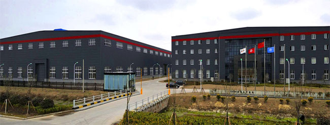

About Us
Brief Introduction of Zenith
Shanghai Zenith Mining and Construction Machinery Co., Ltd., often called Zenith for short, is a professional manufacturer of mining equipment, which includes crushing machinery, grinding machinery, beneficiation equipment, and other associated machines. Our products have been sold to 165 countries and areas of Southeast Asia, East Europe, South America, the Middle East and Africa, etc. We believe that Zenith products will benefit more quarry contractors and investors in future.
Zenith's Culture
We pursue the zenith of technology and quality.
Our Promise, Our Vigor comes from:
Corporate Culture for Talents and Resolution
Qualified Products and Continuous Innovation
High-efficient Applied Research and Technical Support
Service Network, Considerate and In-time Service
Zenith Factory
The headquarters of Zenith are located in Shanghai, China. Manufacturing center in Shanghai about 450,000 square meters; one hour drive to the east direction in Qidong city from Shanghai, another manufacturing center is about 600, 000 square meters. This two manufacturing bases are our solid backing. Up to now, we have sales and service offices, and distributors in over 20 countries, more and more effective service will be supplied to local customers.
Our Goal
The goal of Shanghai Zenith is to become the top leader in their respective markets by offering our honored customers the means to be more productive and profitable. Deeply believe that the measure of our worth is in the development and innovation of new products, and we are pursuing the "Zenith direction of technology and quality" all the way. We will constantly supply better products and service for open-pit mining, and we will bring more value for our global customers. Shanghai Zenith, your considerate and reliable manufacturer of mining equipment, your wise choice! Welcome you to our company!